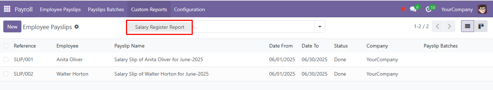
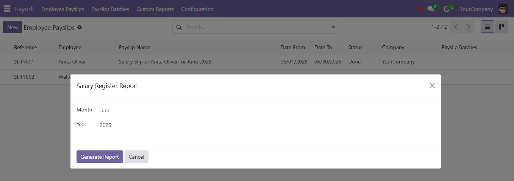
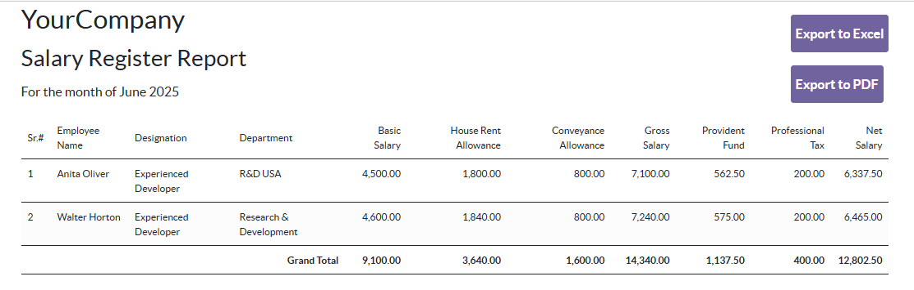
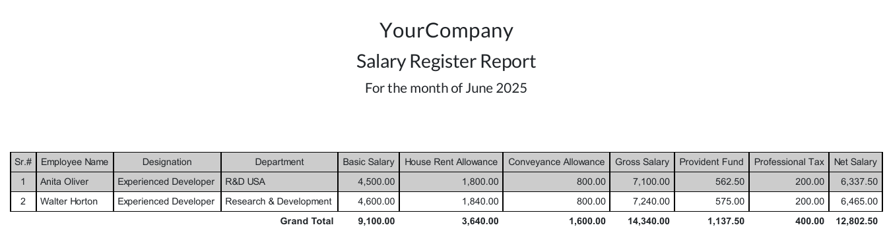
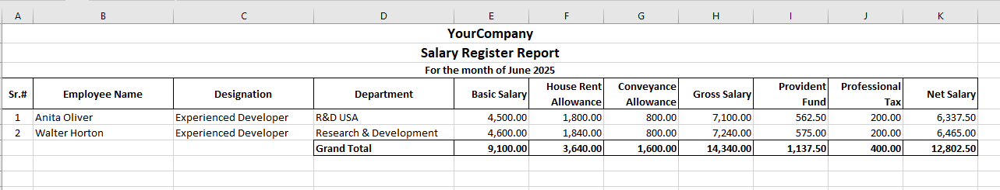

<section class="oe_container">
    <div class="oe_row oe_spaced">
        <h2 class="oe_slogan" style="color:#875A7B;">Payslip Salary Register Report</h2>
        <h3 class="oe_slogan">Salary register report with allowances and deductions of selected month.</h3>
        <div class="oe_demo oe_picture oe_screenshot">
            <br>
            <h3 style="text-align: center">Salary Register Report</h3>
            <h5 style="text-align: center">Navigate to Salary Register Report under Custom Reports menu in Payroll.</h5>
            
        </div>
        <div class="oe_demo oe_picture oe_screenshot">
            <br>
            <h3 style="text-align: center">Wizard to get criteria</h3>
            <h5 style="text-align: center">Select Month and Year of Salary Register Report.</h5>
            
        </div>
        <div class="oe_demo oe_picture oe_screenshot">
            <br>
            <h3 style="text-align: center">HTML view of Salary Register Report</h3>
            <h5 style="text-align: center">A HTML view of Salary Register Report will open in new tab.</h5>
            
        </div>
        <br>
        <div class="oe_demo oe_picture oe_screenshot">
            <br>
            <h3 style="text-align: center">PDF view of Salary Register Report</h3>
            <h5 style="text-align: center">A PDF view of Salary Register Report will open on click Export to PDF button.</h5>
            
        </div>
        <div class="oe_demo oe_picture oe_screenshot">
            <br>
            <h3 style="text-align: center">Excel view of Salary Register Report</h3>
            <h5 style="text-align: center">An excel view of Salary Register Report will open on click Export to Excel button.</h5>
            
        </div>
    </div>
</section>